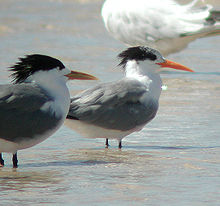
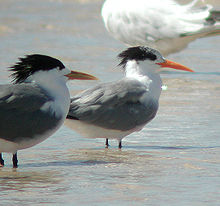

| Lesser Crested Tern | |
|---|---|
|  | |
| Conservation status | |
| Binomial name | |
| Thalasseus bengalensis (Lesson, 1831) |
|
| Synonyms | |
|
Sterna bengalensis Lesson, 1831 |
| Lesser Crested Tern | |
|---|---|
|  | |
| Conservation status | |
| Binomial name | |
| Thalasseus bengalensis (Lesson, 1831) |
|
| Synonyms | |
|
Sterna bengalensis Lesson, 1831 |
The Lesser Crested Tern (Thalasseus bengalensis, syn. Sterna bengalensis - see Bridge et al., 2005) is a seabird of the tern family Sternidae. It breeds in subtropical coastal parts of the world mainly from the Red Sea across the Indian Ocean to the western Pacific, and Australia, with a significant population on the southern coast of the Mediterranean on two islands off the Libyan coast. Accidental breeding has also been reported in Italy and France. The Australian birds are probably sedentary, but other populations are migratory, wintering south to South Africa.
This bird has a number of geographical subspecies, differing mainly in size and minor plumage details:
The Mediterranean race is a rare vagrant to Europe, and has bred in pure or mixed pairs (with Sandwich Tern) in Italy, Spain and England.
This species breeds in dense colonies on coasts and islands. It nests in a ground scrape and lays one to two (rarely three) eggs. Nesting behaviour is very similar to that of Sandwich Terns, with predator avoidance by nesting in very dense colonies, and also (in race emigrata at least) by nesting in the late summer when predatory Yellow-legged Gulls have finished breeding and departed from the nesting area.
Like all Thalasseus terns, Lesser Crested Tern feeds by plunge-diving for fish, usually from saline environments. It usually dives directly, and not from the "stepped-hover" favoured by Arctic Tern. The offering of fish by the male to the female is part of the courtship display.
This is a medium-large tern, very similar in size and general appearance to its three very close relatives Sandwich Tern, Elegant Tern and Chinese Crested Tern. The summer adult has a black cap, black legs and a long sharp orange bill. The upperwings, rump and central tail feathers are grey and the underparts white. The primary flight feathers darken during the summer. In winter, the forehead becomes white. The call is a loud grating noise like Sandwich Tern.
The grey rump is a useful flight identification feature distinguishing it from the related species. The Elegant Tern also differs in a slightly longer, slenderer bill, while Chinese Crested Tern differs in a black tip to the bill and Sandwich Tern a black bill with a yellow tip.
Juvenile Lesser Crested Terns resemble same-age Sandwich Terns, but with a yellow-orange bill, and paler overall, with only faint dark crescents on the mantle feathers.

{kind=link}
_I_IMG_9364.jpg){kind=link}